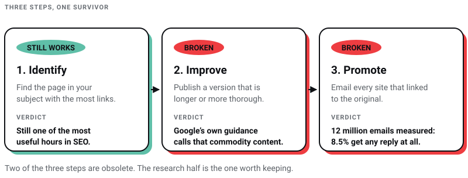
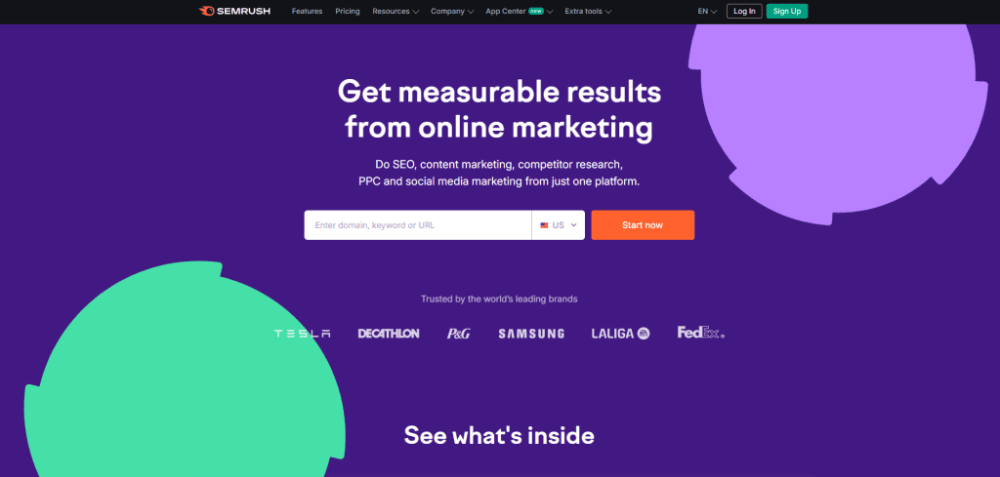

Digital Marketing
Digital Marketing
AEO vs GEO vs SEO: What Actually Matters in 2026 (And What Is Just Noise)
Learn about AEO vs GEO vs SEO. Discover what changed with AI search, what still matters, and how to optimize for Google AI Overviews, ChatGPT, and…

The Skyscraper Technique is a named tactic from 2013. Its evidence is one page on one website. The man who invented it sold that website to Semrush in 2022, and Semrush now belongs to Adobe. Google's own guidance on generative-AI search, published in May 2026, uses something very close to the technique's output as its example of content that does not earn anything.
I still get asked to run it. So this version of the article is not a set of instructions. It is an honest account of what the technique was, which parts of it broke, and what I do at Pixel Street instead.
I run a web design studio in Salt Lake, Kolkata, and we sell SEO retainers. A link-building campaign is easy to bill for and easy to look busy inside, which is exactly why I want to be careful about recommending one. Every fact and date below was read off a linked source page on 30 July 2026.
Find the best-linked page on a topic, publish a longer one, then email everyone who linked to the original. As a description of what agencies still do, that is accurate. As a plan for 2026, it has three problems that are documented rather than rumoured.
What survives is the research half that nobody quotes. Studying which pages already earn links, before you write anything, is still one of the most useful hours in SEO. What you publish afterwards has to be different from those pages, not merely bigger than them.

Brian Dean published it on Backlinko in April 2013. The name is the argument: if there is a tall building next door, put up a taller one and people will look at yours instead. Applied to content, it is three steps.
It is a genuinely clever idea, and in 2013 it was close to free money. The web had far fewer competent pages on any given topic, and a single well-written 3,000-word guide really could be the obvious best answer.
The Backlinko page that introduced the technique reports one campaign: 17 links from 160 outreach emails, an 11% conversion rate, and organic traffic to the page up 110% inside fourteen days. That page is still live, still carries those numbers, and was last updated in June 2024 with no caveat attached.
Read that as an editor rather than as a marketer. It is a single campaign, on a single page, on a site whose owner was selling a course about the method, measured over a fortnight, in 2013. That is not fraud. It is also not evidence, and thirteen years of the entire industry running the same play against the same link targets is a material change in conditions.
In December 2022 Google shipped a link spam update built on SpamBrain, its machine-learning spam system, and described the goal as neutralising the impact of unnatural links. Neutralising is the important word. The link is not counted, you are not warned, and your report still shows it as acquired. Google's spam policies, last updated 15 May 2026, list links with optimised anchor text placed in articles or guest posts on other sites as link spam outright.
The Skyscraper outreach email does not automatically fall foul of that. Asking an editor to update a stale reference is a legitimate thing to do. But a campaign that sends the same request to a few hundred sites, at scale, with the same anchor text, is much closer to the pattern those systems are built to spot than most people running it want to admit.
On 15 May 2026 Google published guidance on optimising for generative AI search. Its headline point is that unique, compelling and useful content will influence your presence "more than any of the other suggestions in this guide". Then it draws a line between commodity and non-commodity content, and the example it picks is worth reading twice.
Commodity content, Google says, is something like "7 Tips for First-Time Homebuyers" — common knowledge that could have come from anyone. Non-commodity content is something like "Why We Waived the Inspection & Saved Money: A Look Inside the Sewer Line" — a first-hand take that goes beyond common knowledge.
Now look at what the Skyscraper Technique instructs you to produce. Take the page that ranks, add more of the same, publish "15 Tips" where the incumbent had seven. By construction it manufactures the left-hand column of Google's own example. That is the finding I would want somebody to tell me, and it is why I no longer sell this as a service.
The same guide is equally clear that there is no requirement to chop your content into tiny pieces for machines, and no need to write in a special way for generative AI. It closes the loop by saying that optimising for generative AI search is optimising for the search experience, "and thus still SEO".
The technique assumes the top-ranked page is the page that gets seen. Ahrefs' March 2026 analysis of AI Overview citations found that 37.9% of cited pages also rank in Google's top ten, down from roughly 76% in July 2025. Winning the classic ranking you set out to steal buys you less of the surrounding surface than it did when the tactic was written. I go into what does earn citations in AEO vs GEO vs SEO.
Backlinko, with Pitchbox, analysed 12 million outreach emails and reported that 8.5% receive any response at all, with a single follow-up lifting replies by 65.8%. That study was published in April 2019, before generative AI made cold outreach cheaper to produce and easier to ignore.
So the honest arithmetic on the promotion step is that more than nine emails in ten are ignored, you are competing for the same editors as everyone else who read the same blog post, and the links you do win may be discounted on arrival.

Ahrefs, Semrush and BuzzSumo all do the same job here: show you which pages in a subject have attracted links and from where. Two ownership notes, because tool advice ages badly. Semrush completed its sale to Adobe on 28 April 2026, in a deal CNBC reported at $1.9 billion. BuzzSumo has belonged to Brandwatch since 2017, and Brandwatch to Cision since 2021.
Use that data to answer a different question than the technique asks. Not "which page should I clone", but "what are people repeatedly linking out to explain, and why does the existing answer keep failing them". The gap is usually specificity: no prices, no local detail, no first-hand account of what actually happened.
I publish the things only we can publish. Four years ago I made a cold call to ITC with a fancy deck and zero credibility. Today we design for them, and for Coca-Cola and Marico. That sentence describes exactly one studio in Kolkata. No amount of skyscrapering produces a sentence like it, which is the entire point.
In practice that means our own project numbers rather than borrowed ones, our real quoted ranges rather than "it depends", the decisions we got wrong and what they cost, and the local specifics that a national roundup will never carry. I lost two companies before Pixel Street, and everything I know about what a website has to earn came out of those two failures rather than out of a keyword tool.
Links then arrive as a by-product of being the source rather than the summary. That is slower, it is less satisfying to report on, and it is the only version I have seen survive a run of core updates. If you want the mechanics of earning and auditing links without the 2013 framing, I have written those up in the backlinks strategy guide, and the wider checklist lives in the SEO checklist.
The research step is not. The publish-a-longer-version step is now a bad bet, because length is not the axis Google's guidance rewards. The outreach step is a volume game whose published response rate is 8.5%. Calling the whole thing dead is a headline. Calling two of its three steps obsolete is accurate.
They matter. Google's own guide to its ranking systems, last updated 10 December 2025, still lists link analysis systems and PageRank among them. What has changed is how you get them and how much of your budget they deserve. Gary Illyes of Google said at Pubcon in September 2023 that he does not agree links are in the top three ranking factors and that they have not been for some time.
Not on its own, and it never did in the way the tactic implied. Length was a proxy for thoroughness in 2013 because most pages were thin. Most pages are no longer thin.
Pick the three questions your customers actually ask on the phone, answer them with your own numbers and your own examples, and put your name on it. Then tell the people who would genuinely want it. That is not a growth hack, and it is what has worked for us.
If you would rather not run this yourself, talk to Pixel Street. I would rather tell you a tactic is finished than sell you twelve months of it.
6 min read 17 cited sources Digital Marketing
Author
Khurshid Alam is the founder of Pixel Street, an AI-native design & development studio. Design thinking on weekdays and spreadsheets on weekends.
He writes about growth, design, and AI, mostly because someone has to say the quiet parts out loud.
Digital Marketing
Learn about AEO vs GEO vs SEO. Discover what changed with AI search, what still matters, and how to optimize for Google AI Overviews, ChatGPT, and…
 Digital Marketing
Digital Marketing
Discover the 5 reasons ChatGPT recommends your competitors instead of your business—and how to improve AI visibility, SEO, GEO, and AEO.
 Digital Marketing
Digital Marketing
Want ChatGPT to recommend your brand? Learn how AI chooses businesses, where citations come from, and practical ways to increase your visibility.
 Digital Marketing
Digital Marketing
93% of all online experiences begin with a search engine, and backlinks are one of the top three ranking factors used by Google. Backlinks are not just…


{kind=link}